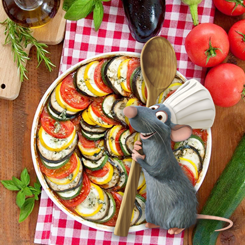

Les ingrédients
- 2 Aubergines de taille moyenne
- 1 Courgette verte
- 1 Courgette jaune
- 2 Poivrons rouges
- 2 Tomates
- 1 Gousse d’ail
- 1 Oignon
- 1 Noix de muscade
- Huile d’olive
La recette
- Demande à tes parents de couper des fines tranches de courgette verte et de courgette jaune, d’aubergine et d’un poivron à l’aide d’une mandoline.
- Enlève les grains de tes poivrons et fais bouillir les tomates pendant 10 minutes pour retirer la peau et les pépins.
- Place le poivron rouge, les tomates, l’ail épluché, l’huile d'olive, l’oignon, le sel et le poivre dans un mixer et mixe le tout pour obtenir une super sauce bien lisse !
- Dans un plat à gratin, verse toute la sauce. Puis recouvre-la de rondelles de légumes en alternant chaque légume ! Sale et poivre. Recouvre d'une feuille de papier sulfurisé découpée à la forme de ton plat.
- Fais cuire le tout 45 minutes.